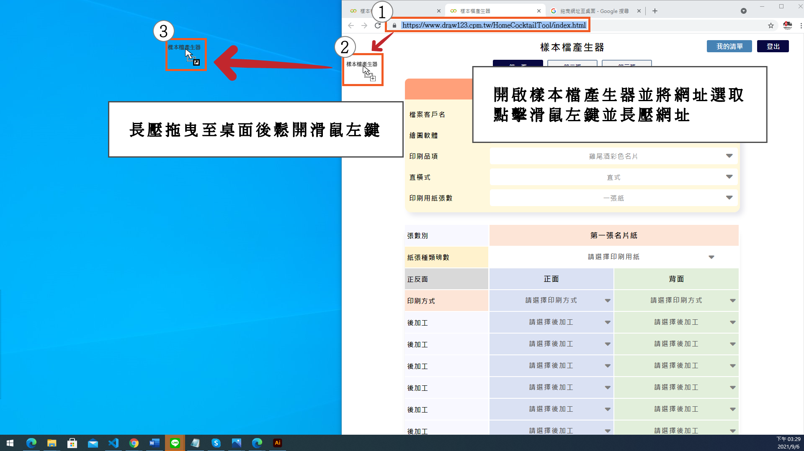
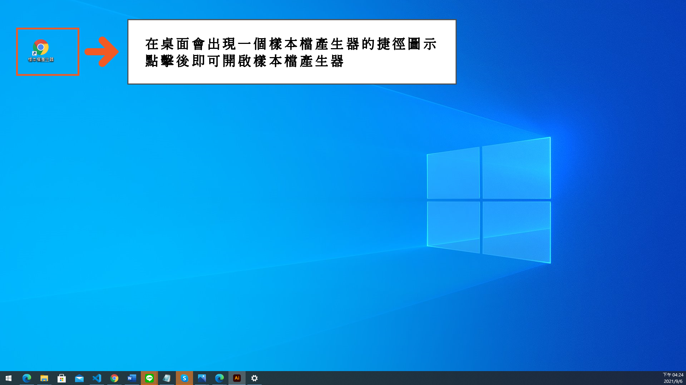
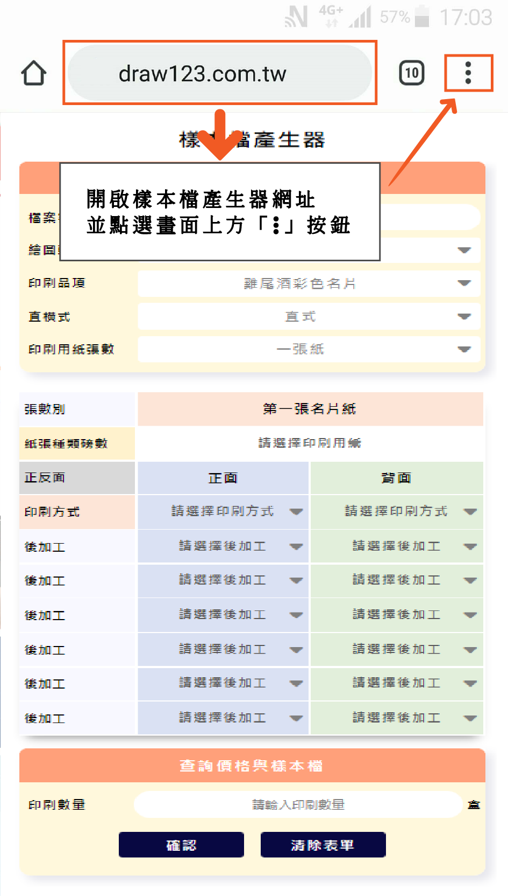
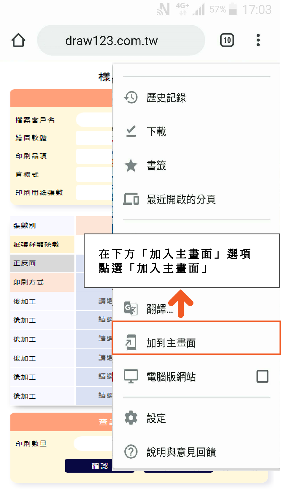
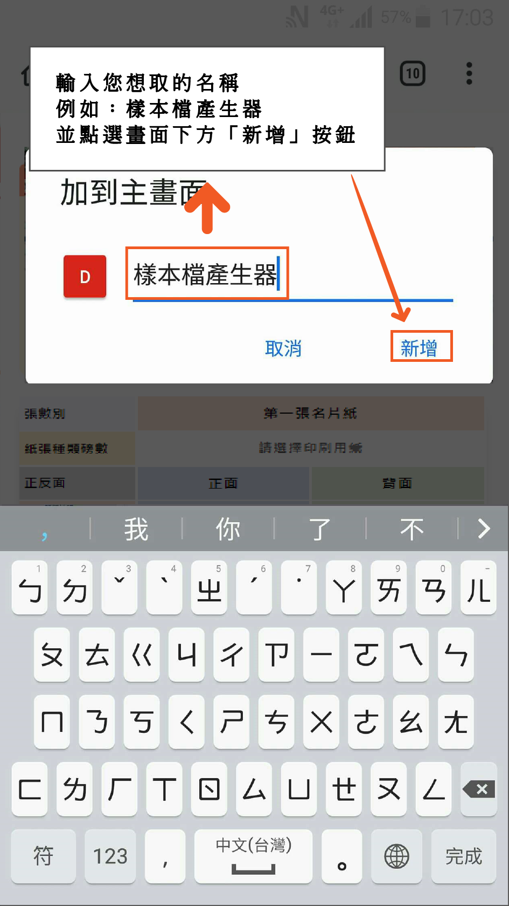
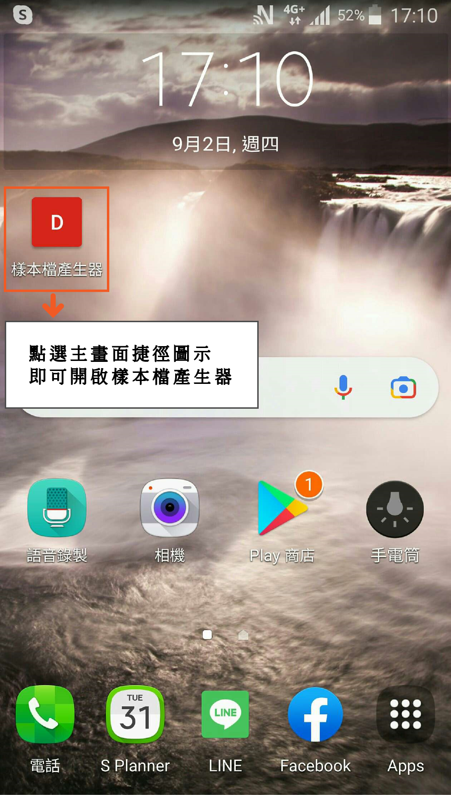
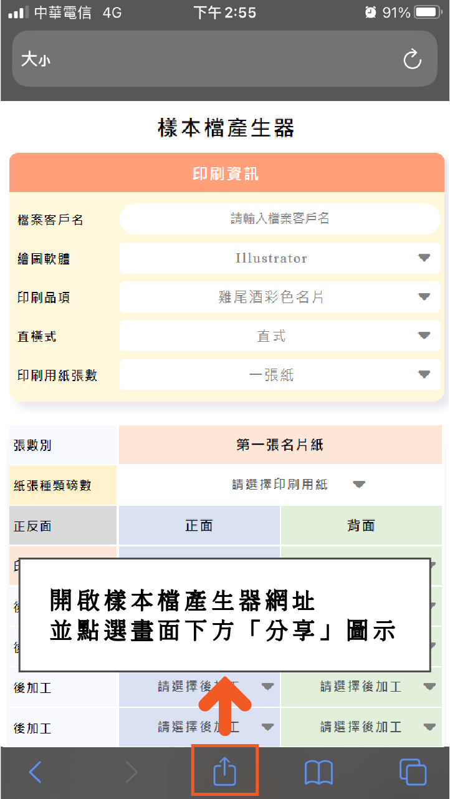
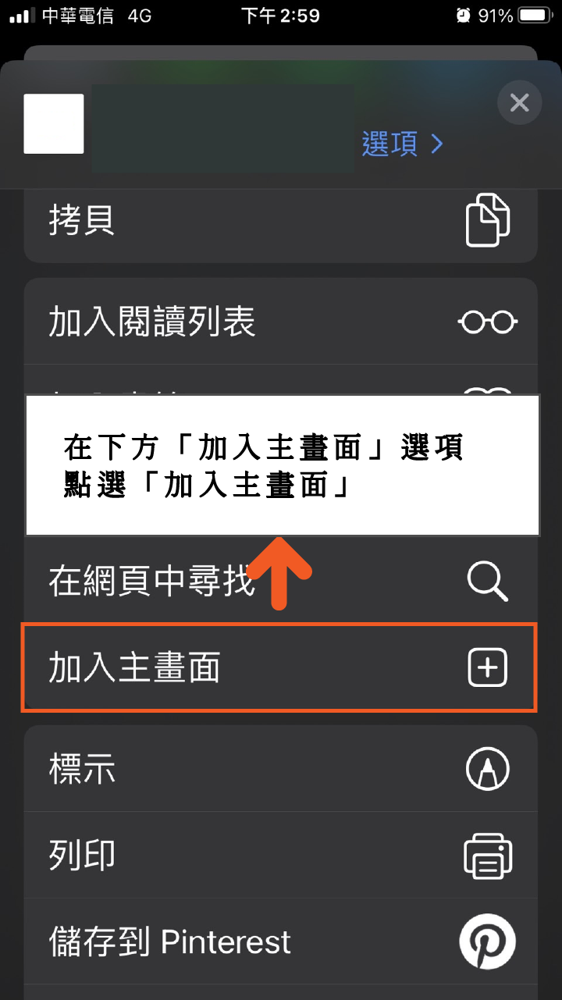
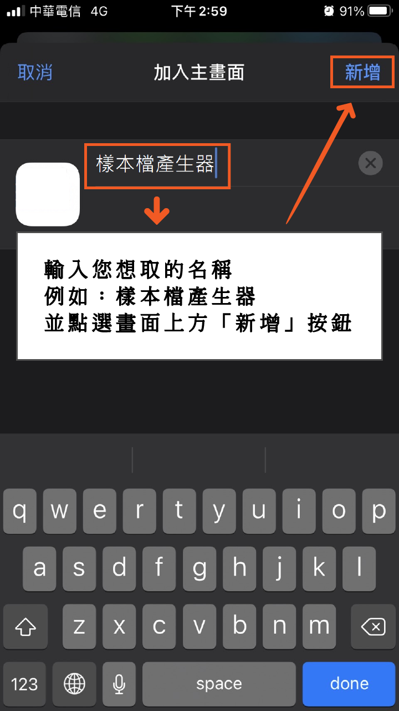
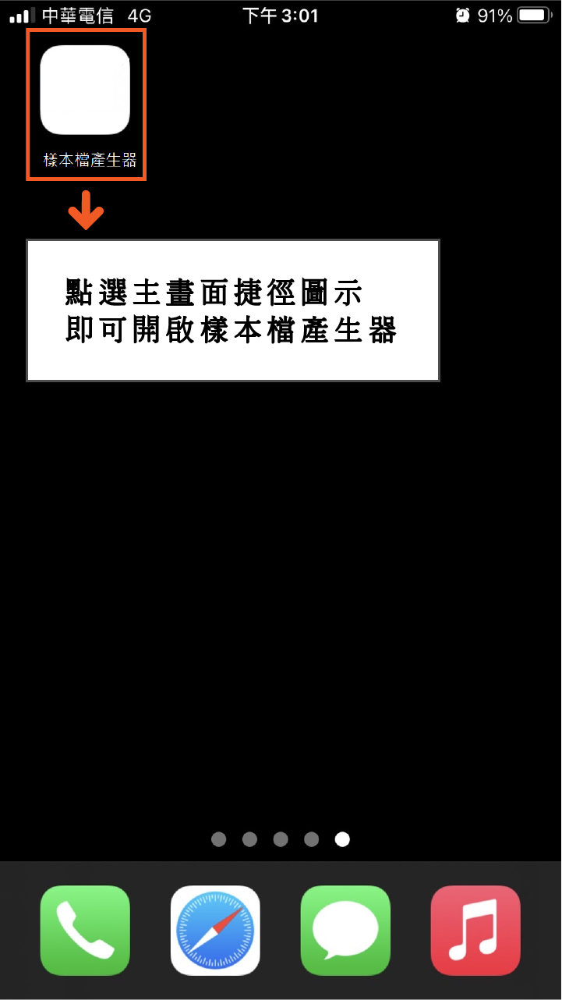

電腦版建立捷徑教學
- 1.首先，開起我們常使用的瀏覽器瀏覽器，開啟 樣本檔產生器
- 2.點選並長壓滑鼠左鍵網址前方的小圖示，將他拖曳時會現+號的符號，並將他拖曳至你想放置的資料夾或桌面
- 3.放開滑鼠左鍵，就發現桌面或資料夾多了一個網頁捷徑，只要點擊該圖示，就可以開啟"樣本檔產生器"了。
步驟一

步驟一

手機 (Android)建立捷徑教學
- 1.首先，我們要使用常用的「Chrome」瀏覽器，開啟樣本檔產生器，並點選畫面上方的「…」圖示
- 2.接著滑到下方的「加到主畫面」選項，選擇「加到主畫面」
- 3.輸入您容易記的名稱，例如"樣本檔產生器"，然後按「新增」
- 4.回到手機主畫面後，就會發現桌面多了一個網頁捷徑，只要點擊該圖示，就可以開啟"樣本檔產生器"了。
步驟一

步驟二

步驟三

步驟四

手機 (iOS)建立捷徑教學
- 1.首先，我們要在內建的「Safari」瀏覽器，開啟網址樣本檔產生器，並點選畫面下方的「分享」圖示
- 2.接著滑到下方的「加入主畫面」選項，選擇「加入主畫面」
- 3.輸入您容易記的名稱，例如"樣本檔產生器"，然後按「新增」
- 4.回到iPhone主畫面後，就會發現桌面多了一個網頁捷徑，只要點擊該圖示，就可以開啟"樣本檔產生器"了。
步驟一

步驟二

步驟三

步驟四
